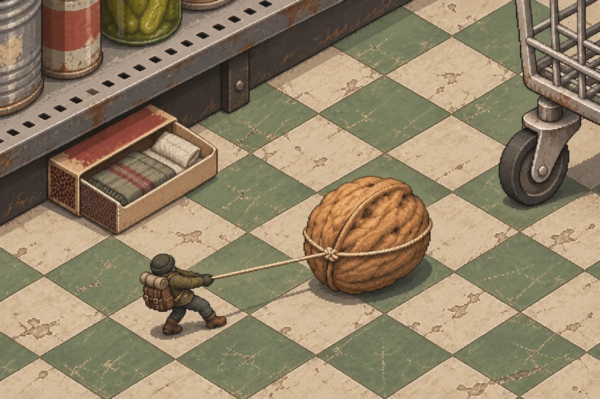

슈퍼마켓 진열대 밑에서 사는 소인들의 생존 게임 기획
견과류 매대 아래로 호두 한 알이 굴러왔다. 껍데기째 집에 들이면 네 식구가 며칠은 먹는다. 문제는 집 입구다. 혼자 옆으로 누워야 겨우 들어가는 틈에 호두가 들어갈 리 없다. 오늘 저녁거리를 등에 질 만큼만 떼어 갈까, 아니면 집을 호두 쪽으로 옮길까?
주인공은 동네 슈퍼에 숨어 사는 손가락 한 마디 크기의 주민이다. 세상은 멀쩡하다. 점원은 물건을 채우고 손님은 우유를 사러 온다. 그 평범한 영업일이 진열대 밑에서는 날씨와 지형을 바꾸는 사건이다. 플레이어는 주민 한 명을 직접 움직여 먹고, 짐을 나르고, 다친 발을 쉬게 하고, 식구들이 다음 날 눈을 뜰 곳을 마련한다.

프로젝트 좀보이드에서 짐을 싣고 돌아오는 일
원작에서 외출 목적은 집 안의 사정에서 생긴다. 켄터키의 한 주택을 거점으로 삼으면 오늘 먹을 것, 창문을 막을 목재, 먼 곳에서 물자를 실어 올 차가 각기 다른 목적지가 된다. 차에는 적재 공간이 있는 동시에 부품 상태와 충돌 피해가 있다. 차를 얻는 순간부터 돌아오는 길과 다음 수리도 계획의 일부가 된다. 개발사 게임 소개 · Build 39 차량 시스템 기록
출발할 때 세운 계획은 현장에서 바뀐다. 좀비는 보고 들은 것을 따라오고, 건너편 집이 화면에 보이더라도 내 인물이 확인할 수 있는 범위에는 한계가 있다. 낮밤의 변화와 정전은 탐색할 시간을 줄인다. 식량을 찾아 먹는 일도 겨울이 다가오면 파종 시기와 저장 기간을 헤아리는 일로 길어진다. 같은 식료품점이 첫날에는 한 끼를 얻는 곳이고, 정착한 뒤에는 집을 얼마나 오래 비워도 좋을지 따져 가며 다녀올 곳이 된다. 개발사의 Steam 게임 설명 · Build 42.20 농사와 보존 제작
다시 플레이할 때 고정된 지리와 달라지는 정보가 함께 작동한다. Build 42에서 세계 시드는 일부 지하실, 좀비 분포, 기존 지도 경계 밖의 야생지에 영향을 준다. 실내 문과 조명의 초기 상태도 달라질 수 있다. 샌드박스에서는 전리품과 좀비 행동을 조절할 수 있고, 싱글플레이에서 인물이 죽으면 같은 저장 세계에 새 인물로 들어갈 수도 있다. 전자는 처음 마주할 조건을 고르는 일이고 후자는 내가 바꿔 놓은 동네로 돌아가는 일이다. 세계 시드와 샌드박스 설정 · 사망 후 새 인물로 이어 하기
이 기획이 가져오는 부분은 빈손일 때와 짐을 실었을 때 같은 길의 가치가 뒤집히는 경험이다. 슈퍼의 진열대 하나를 동네 한 블록처럼 설계한다. 빈손으로 갈 때는 받침대 구멍을 통과하면 된다. 호두를 묶고 돌아올 때는 발소리가 끊기기를 기다려 탁 트인 통로를 건너야 한다.
호두 한 알을 집에 들이는 세 가지 방법
주머니에 넣은 작은 것은 몸과 함께 움직인다. 양손으로 든 짐은 사다리를 오르기 전에 내려놔야 한다. 바닥에 끈을 대고 끄는 짐은 캐릭터 뒤에 실제로 놓이며 모서리에 걸린다. 끈을 놓으면 짐은 그 자리에 남는다. 무거운 것을 발견한 순간에 탐색이 끝나지 않는 이유다.
| 선택 | 직접 하는 일 | 내일 달라지는 것 |
|---|---|---|
| 조금 떼어 간다 | 깨진 껍질 사이에서 알맹이를 긁어 주머니에 넣고 좁은 틈으로 돌아간다. | 오늘 저녁은 먹는다. 열린 호두에 개미 행렬이 닿으면 나머지를 나눠 가져야 한다. |
| 통째로 옮긴다 | 면실로 호두를 묶고 종이 썰매에 싣는다. 낮은 문턱에 영수증을 접어 경사판을 놓는다. | 집 밖 건조한 틈을 식량 창고로 쓰게 된다. 경사판을 치워야 점원이 다음 청소 때 발견하기 어렵다. |
| 그 옆에서 산다 | 이불과 물을 먼저 옮기고 매대 다리 안쪽에 잠자리를 편다. | 짐을 끌 필요는 사라진다. 대신 식구가 마실 물을 냉장고 아래에서 길어 오는 왕복이 길어진다. |
개미, 점원, 청소 카트는 저마다 흔적을 읽는다. 개미는 흘린 먹이, 점원은 통로에 나온 포장 쓰레기, 카트는 사람이 정한 청소 순서를 따른다. 점원이 바닥에 놓인 썰매를 발견하면 종이류를 모으는 상자로 가져간다. 잃은 물건이 어디로 갔는지 아는 플레이어에게는 다음 외출의 목적지가 하나 생긴다.
개점부터 마감까지의 하루
개점 전. 성냥갑 침대에서 일어나 냉장고 아래 받쳐 둔 병뚜껑에서 물을 뜬다. 어제 끌다 만 호두는 네 번째 타일에 있다. 어젯밤 다리를 접질려 선반 턱을 뛰어넘기 힘들다. 식구가 엮어 둔 실타래를 빌리면 호두를 옮길 수 있지만 오늘 해먹 수선은 미뤄진다.
영업 중. 계산대 종이 울리면 점원이 자리를 비운다. 호두를 매대 다리까지 당겼는데 통로 반대편에 우유 상자가 내려앉는다. 빈손일 때 보였던 귀갓길이 막혔다. 끈을 풀어 호두를 숨기고 혼자 돌아가거나, 상자 손잡이 구멍에 실을 걸어 임시로 짐을 들어 올릴 수 있다. 후자를 택하면 상자를 수거하기 전에 실부터 회수해야 한다.
마감 뒤. 출입문 셔터가 내려가고 바닥에 긴 물줄기가 번진다. 종이 썰매는 젖으면 접힌다. 오늘은 귀가를 포기하고 마른 가격표 받침 아래에서 잔다. 남은 알맹이를 먹고 실을 감아 둔다. 아침이 되면 막혔던 구간부터 다시 시작한다. 식구는 집에 둔 비축분을 하루치 꺼내 쓴다.
진열대 아래에서 보이고 들리는 것
고정된 등각 시점에서 바닥 타일의 줄눈이 거리 눈금 역할을 한다. 포장지의 뜯긴 결, 철제 다리의 녹, 투명 테이프의 들뜬 귀퉁이가 보일 만큼 가까운 픽셀풍 화면이다. 인물이 매대 안으로 들어가면 앞쪽 가림판만 걷힌다. 호두가 턱에 걸리면 끈이 팽팽해지고 인물의 어깨가 뒤로 젖혀진다. 어디가 걸렸는지는 몸을 돌려 짐 쪽을 봐야 안다.
인간은 보통 신발 끝과 함께 화면을 가로지르는 그림자로 보인다. 점원이 오기 직전에는 끊어진 줄눈 위에서 카트 바퀴가 두 번 튀고, 바로 곁의 가격표가 떨린다. 소리를 끈 사람도 가격표의 진동과 다가오는 그림자로 어느 쪽에서 오는지 읽을 수 있다. 반대로 서늘한 매대 뒤에서는 사람의 모습은 가려지고 바퀴 소리의 방향만 들린다. 방향 자막도 선택할 수 있다.
다시 시작했을 때 같은 가게가 달라지는 이유
계산대와 냉장고, 벽의 틈은 늘 같은 자리에 둔다. 새 세계를 열 때에는 한 달치 영업 달력을 정한다. 납품 요일, 행사 매대가 이동할 자리, 폐지 수거일이 맞물린다. 이를 알아낼 단서도 함께 놓는다. 묶어 둔 빈 상자는 수거가 가깝다는 뜻이고, 바닥에 붙은 테이프 자국은 다음 매대가 놓일 자리다. 영수증 뒷면 지도에 직접 표시할 수 있다.
- 첫 회차, 받침대 뒤의 식량 창고. 폐지 수거가 사흘 뒤라 빈 상자를 오래 쓸 수 있다. 손이 빠른 바느질공으로 시작해 실 고리를 여러 개 만들어 호두를 끌어 온다. 다음 주에는 더 큰 짐을 실으려 썰매를 고치고, 식구와 번갈아 실을 회수한다. 최종 목표는 휴점 기간을 한집에서 버틸 식료품 저장고다.
- 둘째 회차, 매대를 도는 배달꾼. 같은 호두를 발견했지만 오늘 폐지 수거차가 온다. 넓은 운반로가 먼저 사라진다. 주머니가 큰 앞치마를 가진 주민으로 알맹이만 나르고, 이웃에게 먹을 것을 맡겨 타일 통로 양쪽에 잠자리를 얻는다. 정착할 필요 없이 매대 사이를 오가는 우편 노선을 여는 쪽이 이번 달의 목표가 된다.
- 오래 산 집의 다음 세대. 실을 매는 솜씨와 다리 부상은 그 인물에게 속한다. 인물이 죽으면 남은 식구로 같은 날짜에서 이어 갈 수 있다. 바닥에 떨어진 짐, 만들어 둔 지름길, 집 벽에 그어 둔 수거일 표시는 그대로 있다. 마지막 주민을 잃거나 새 가게를 선택하면 달력과 가구 배치를 새로 정한다.
창고를 완성한 뒤에는 아침의 물 긷기와 정해진 길의 배달을 식구에게 맡길 수 있다. 사람이 직접 왕복해 본 길만 부탁할 수 있고, 운반 통로가 막히면 식구는 가까운 은신처에서 기다린다. 플레이어는 매일 호두를 반복해서 끌기보다, 다음 행사로 가게가 붐비기 전에 새 길을 내거나 기다리는 식구를 데리러 갈 수 있다.
매대 두 줄로 해 보는 첫 실험
첫 시제품에는 진열대 둘, 안전한 틈 하나, 옮길 호두 하나, 카트를 미는 점원 한 명만 둔다. 같은 사람에게 통로에 상자가 남아 있는 영업일과 상자가 바로 수거되는 영업일을 한 번씩 준다. 첫 판에 포기한 짐의 위치를 기억하고 돌아오는지, 둘째 판에 빈 상자 더미를 보고 스스로 운반 방법을 바꾸는지를 관찰한다. 모두가 카트가 지나갈 때까지 가만히 기다린다면 지름길에 짐을 내려놓을 자리부터 하나 더 만든다.
콘셉트 아트 생성 프롬프트
Original 3:2 landscape gameplay screenshot. Strictly high-angle fixed orthographic isometric map view (camera looks DOWN at 45 degrees, no horizon, no vanishing points), tile-based survival RPG. A close crop of a small area of an old operating supermarket seen as a miniature person's world. Almost all the image is the FLOOR as a diagonal diamond grid of giant scuffed cream/green floor tiles; the parallel shelf edge runs diagonally across the top edge. Small booted human scavenger leans back pulling a taut string tied around one whole unshelled walnut, approximately equal to their height, on the floor in the open walking lane. At a dark shelf base an open matchbox containing a folded cloth bed. One caster wheel of a shopping cart intrudes from an edge, on the same floor plane as everything else. From above we see no human faces, horizon, distant shop aisles or skyline. Clear, lightly weathered, pixel art from an actual playable overhead isometric RPG, hard pixel edges, restrained pixel clusters, muted materials and illumination. Make the diagonal grid consistent with the top faces of the matchbox bed and the caster in the entire picture. No text, writing, logo, title or interface.